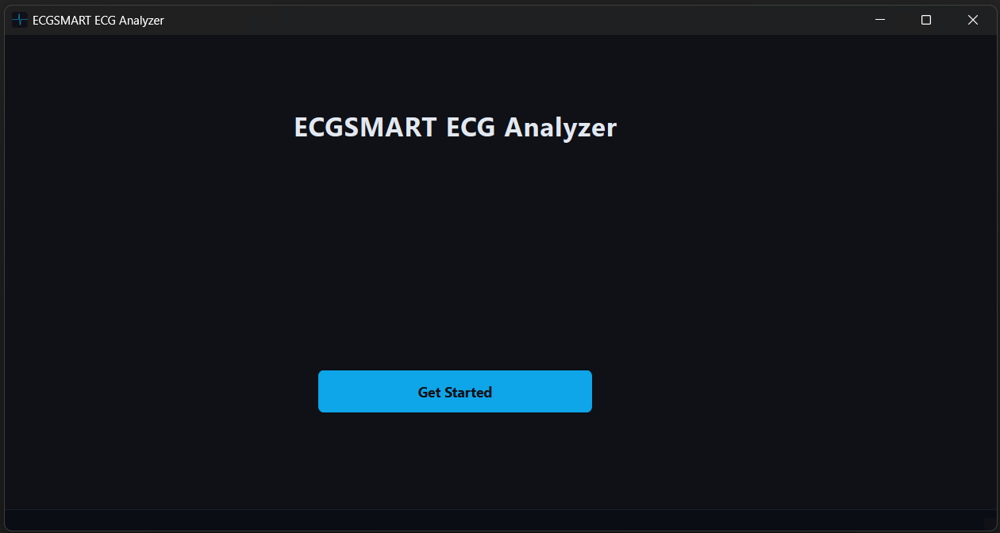
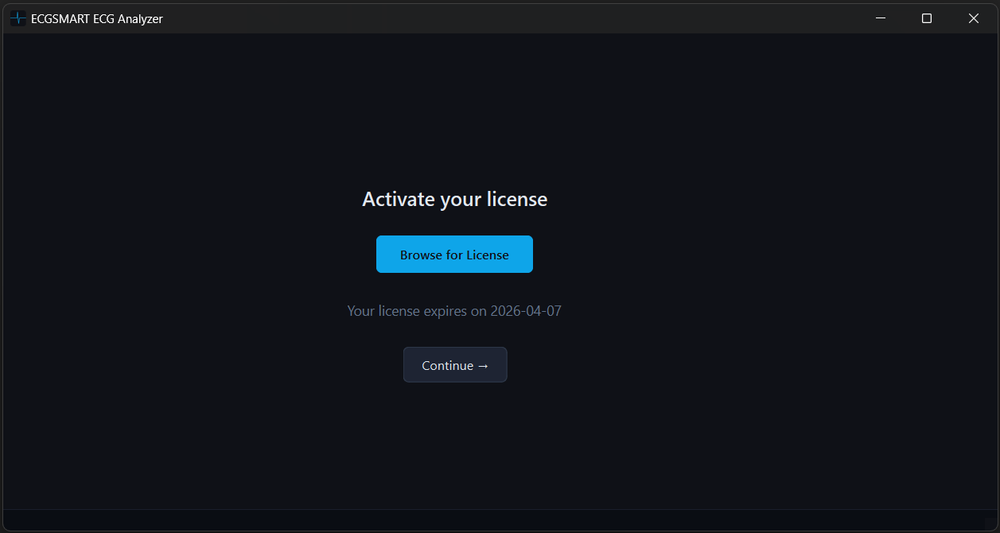
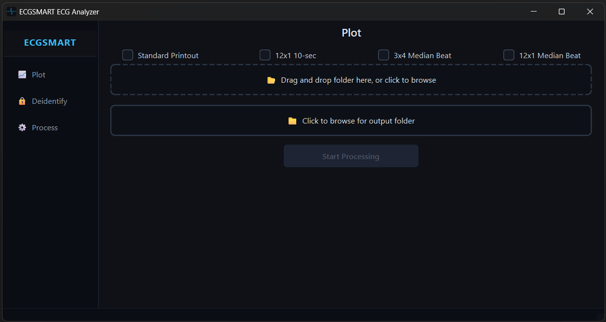
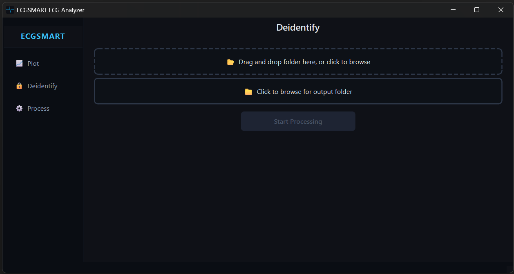
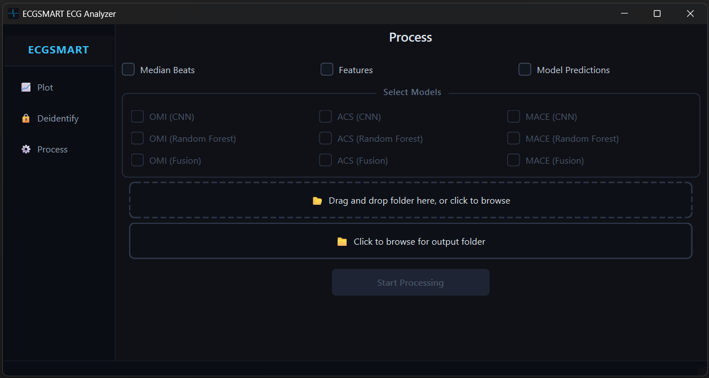

ECG Analyzer is a desktop app created in Python using PySide6. The app contains multiple screens, each with different functionality.
1) Home screen
2) License screen
3) ECG plotting screen
4) ECG deidentification screen
5) ECG processing screen
The home screen is the screen that first appears when you open the app.

The license screen asks the user to browse for a license file (.lic). The license file is generated using a private key. The license file includes information about expiration date and which tools the user can access. This functionality was created using python's cryptography library.

The plotting screen allows users to select four different plot types:
1) Standard printout
2) 12x1 10-second
3) 3x4 median beat
4) 12x1 median beat
The user can browse for or drag & drop a folder containing ECG files to plot. The user also browses
for a folder to save the images in. A progress bar shows how many files have been processed in
real time.

The deidentification screen allows users to remove sensitive information from their ECG files. The user browses for or drags & drops a folder containing ECG files and also browses for a folder to save the deidentified files in. The deidientifed ECG files are renamed and stored in the selected folder along with a linkage csv file containing the original and new names of the ECG files. A progress bar shows how many files have been processed in real time.

The processing screen allows users to generate median beats, features, and model predictions from their ECG files. The user browses for or drags & drops a folder containing ECG files and also browses for a folder to save the processed files in. Median beats are generated and saved in csv files per ECG. Features are saved in one csv file across all ECGs. Model predictions are saved in one csv across all ECGs. The user can select which models to generate predictions for. A progress bar shows how many files have been processed in real time.
